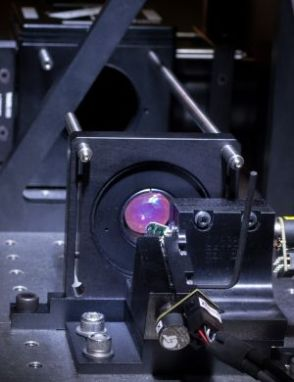
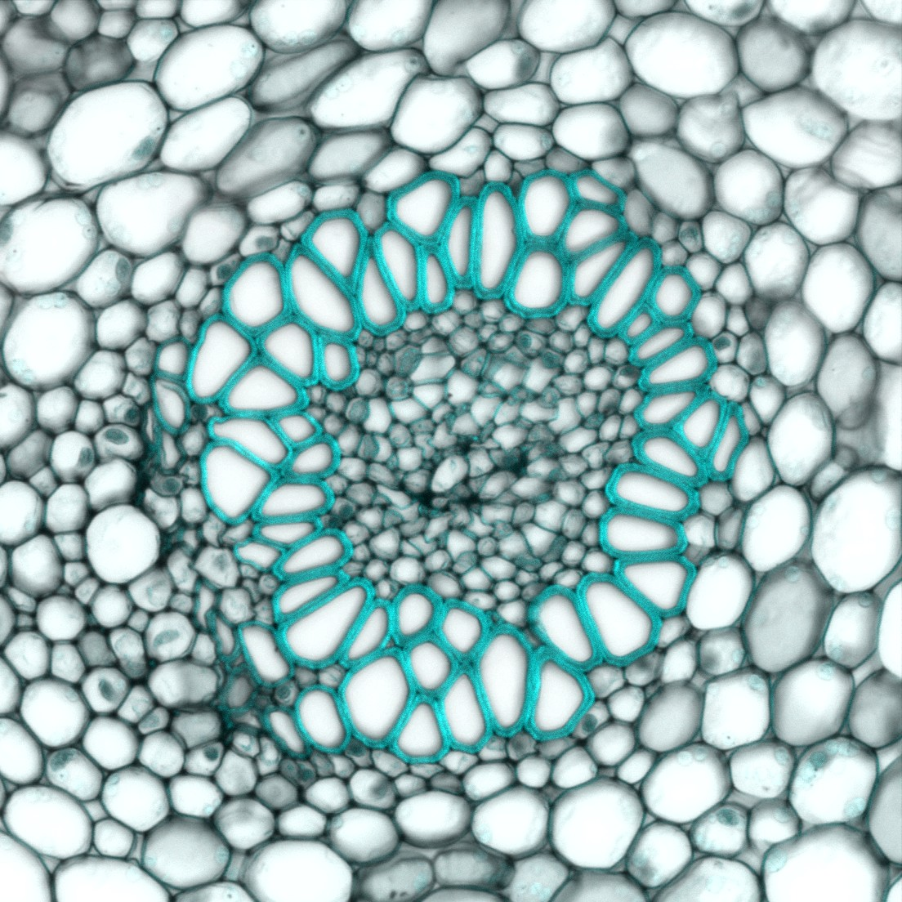

About NOBIC
NTU Optical Bio-Imaging Centre (NOBIC) provides expertise in optical imaging and microscopy to researchers at Lee Kong Chian School of Medicine (LKCMedicine) and Singapore Centre for Environmental Life Sciences Engineering (SCELSE) at Nanyang Technological University, Singapore (NTU). Currently, NOBIC supports also the Institute for Digital Molecular Analytics and Science (IDMxS). Our team consists of physicists, chemists and engineers who together cover a broad range of expertise relevant to optical imaging in life and biomedical sciences, including the design and development of customised imaging systems, advanced imaging experiments or image processing and analysis. Our activities can be loosely divided into two domains (with a lot of overlap between them):
Imaging facilities operation and user support:
- We ensure the microscopes are in a good working order and troubleshoot technical issues.
- We train users in microscope operation and assist them with issues encountered during their experiments.
- We collaborate with users on advanced imaging experiments and image analysis.
Research and development in optical imaging methods and instrumentation:
- We investigate innovative technologies in optical imaging with promising bio-imaging applications.
- We collaborate with researchers and develop custom solutions to meet their specific imaging needs.
The research and development activities are centered around NOBIC Imaging Research Laboratory and the adjacent prototyping workshop, where a variety of custom optomechanical parts can be manufactured.
We welcome collaboration with researchers and industrial partners. Do not hesitate to contact us if you think our expertise in optical imaging can help you to solve your scientific questions. Visit our GitHub page for details of our designs and solutions and for our collection of FIJI/Image J macros written for our microscopy facilities users.
Our Expertise
| 
Instrumentation for Optical Imaging &
(Micro)spectroscopy
|

Instrument Control Software Development
& Image Analysis;
|
| 
Microscopy Techniques, Applications &
Sample Preparation
|